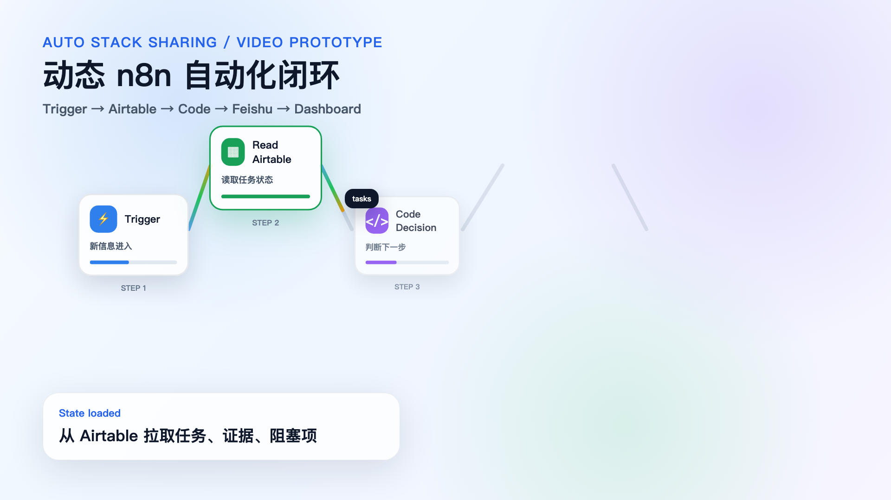

不是工具清单，而是把 n8n、Skills、Agent OS 组织成一套能持续推进真实工作的系统。
今天不考大家会不会 AI，而是让不同基础的同事都能看到下一步：AI 不只是聊天窗口，它可以进入工作流，帮你做真实任务。
开场视频只做 75–120 秒肌肉展示，不承担讲课任务。
把信息接进真实系统：Airtable、Feishu、Dashboard、GitHub。
把想法推进成高审美、高结构、可交付的复杂资产。
角色、记忆、任务账本、心跳、协作机制。
它不一定负责所有思考，但负责在正确时间，把正确信息送到正确系统。

逾期任务提醒：状态变化 → 判断 → 推送。
EOD 汇总：跨 Agent 状态 → 飞书消息。
Airtable → Dashboard：让任务可观察。
分享项目本身进入状态管理。
给模型一个资料柜。
给工具一个统一插口，像 AI 的 USB-C。
给 AI 工作流程、记忆、任务表和团队机制。
用户提问 → 读取文档/项目状态 → AI 总结/分类/提取下一步 → 写入系统 → 返回带上下文回答。
复杂内容结构 + 高审美表达。
从稿件到可讲页面。
产品化知识页和 UI 质感。
长稿、状态、决策被沉淀。
每一步有证据。
不是 prompt，而是可复用做事方法。
高壁垒不是“会写一句 prompt”，而是把审美、结构、交付标准封装成可调用能力。
主脑 / 协调 / 记忆管理
学习 / 研究 / 技术评估
工作 / CER / 项目管理
内容 / 写作 / 设计
个人节奏 / 情绪 / 生活支持。Agent 不是拟人化装饰，而是角色边界 + 任务账本 + 记忆 + 执行循环。
SOUL / HEARTBEAT / memory / agent_tasks / PROJECT_STATE 让 Agent 有角色、有节奏、有状态、有证据。
任务状态、证据链接、阻塞项。
多 Agent 从分解到执行、验证、同步。
Agent 在协作环境里流转信息。
流程层负责信息流动；能力层负责方法复用；协作层负责长期任务和多 Agent 协作。
自动化总机：在正确时间，把正确信息送到正确系统。
不是 prompt 收藏夹，而是可重复执行的做事方法。
目标、工具、记忆、执行循环、反馈和可视化。
我的路径：n8n → Skills → Agent OS。推荐路径：Agent OS → Skills → n8n。
先定义角色、任务和状态，再沉淀能力，最后把高频流程接进自动化。
当你不知道一个信息时，它对你来说就像不存在。AI 能帮你走完信息链路，但不能替你形成判断。
AI 时代真正重要的能力：问题拆解、方向选择、结构化表达、审美品味、把产物交付到真实场景。
复盘不是总结，是把经验变成长期可用的内容资产。
需求、边界、交互、验证，比写代码本身更贵。
定位 → 状态收集 → 稿件 → HTML → 视频 → 复盘。
CER/PTR 只做 proof，不抢主线：用户需求 → 架构开发包 → 分工 → 内部轻量对齐 → 外部专家工作讨论 → 内部锁版。
角色、边界、语气、职责。
何时醒来，检查什么，推进什么。
长期状态和关键决策。
当前任务、证据、阻塞项。
不要一开始追求全自动。先让状态可流转、可观察、可确认。
n8n、Dify、MCP、AI Agents、AI coding workflow 不是口头引用，而是有来源、有截图、有学习链接。
USB-C for AI applications.
Agentic workflows.
Workflow automation.
模型越来越强，但系统决定它能不能进入真实工作。
可以问工具、工作流、Agent 架构、Skill、CER proof、或者怎么从最小闭环开始。